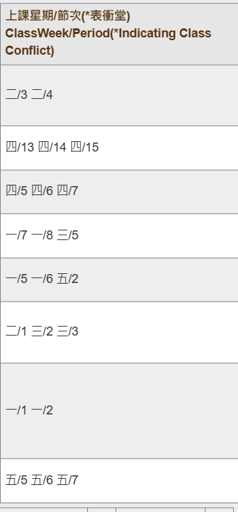

提取資料 <<
Previous Next >> 修課成員查詢器
課表轉換器

原本的選課結果無法直觀的理解
故希望能轉換成表格型式
課表轉換器.7z
由於驗證碼系統無法利用爬蟲爬取資料
故使用手動將選課結果的html複製於 課表.html 檔案中
經由啟動main.exe 會轉換成 課表.xlsx
from bs4 import BeautifulSoup
# 讀取HTML文件
# 有驗證碼問題未解決無法使用爬蟲 暫時自行抓取
file_path = "課表.html"
with open(file_path, "r", encoding="utf-8") as file:
# "r"：讀取模式，用於讀取檔案的內容。
# "w"：寫入模式，用於創建新的檔案或覆寫現有檔案的內容。
# "a"：附加模式，用於在現有檔案的末尾添加內容。
# "x"：獨佔創建模式，用於創建新的檔案，如果檔案已存在則引發錯誤。
#讀取的內容儲存在 html_content 變數中
html_content = file.read()
# 创建Beautiful Soup对象
soup = BeautifulSoup(html_content, "html.parser")
#使用 BeautifulSoup 庫來解析 HTML 內容並尋找所有符合條件的 <tr> 標籤
span_tags = soup.find_all(['tr'])
#allScheduletype分別儲存 課表種類,老師,教室,課號
allScheduletype = [],[],[],[]
for tr_tag in span_tags:
#尋找所有符合條件的 <td> 標籤
td_tags = tr_tag.find_all('td')
if len(td_tags) == 10:
course_name = td_tags[3].get_text(separator=" ").strip().replace("<br/>", "")
#get_text() 方法用於提取指定元素的文字內容。在這裡，separator=" " 參數指定在文字內容中多個節點之間使用空格作為分隔符。
#strip() 方法用於去除文字內容開頭和結尾的空格
#replace("<br/>", "") 方法用於將文字內容中的 <br/> 標籤替換為空字串，即將它們從文字中移除。
course_name = course_name.split()[0]
#將課表種類寫入
allScheduletype[0].append(course_name)
#將對應課堂老師寫入
allScheduletype[1].append(td_tags[7].get_text(separator=" ").strip())
classroom = td_tags[8].get_text(separator=" ").strip()
classroom = classroom.split()[0]
#將對應教室寫入
allScheduletype[2].append(classroom)
classroomNumber = td_tags[1].get_text(separator=" ").strip()
classroomNumber = classroomNumber.split()[0]
#將對應課號寫入
allScheduletype[3].append(classroomNumber)
strings = []
times = []
for tr_tag in span_tags:
td_tags = tr_tag.find_all('td')
if len(td_tags) == 10:
strings.append (td_tags[9].get_text(separator=" ").strip())
for string in strings:
# 根据空格拆分字符串，并将拆分后的部分添加到结果列表中
times.append(string.split())
# print(allScheduletype)0
# 中文数字映射表
number_mapping = {
"一": 1,
"二": 2,
"三": 3,
"四": 4,
"五": 5,
# 添加更多的映射，根据需要补充
}
import pandas as pd
grid = [[""] * 20 for _ in range(20)]
# 创建9行6列的格子
weekdays = ["","星期一", "星期二", "星期三", "星期四", "星期五"]
for i in range(6):
grid[0][i] = weekdays[i]
for i in range(15):
grid[i+1][0] = "第"+str(i+1)+"節"
for x in range(len(times)):
for y in range (len(times[x])):
original = times[x][y]
# 分割中文数字和斜杠
chinese_digits, arabic_digit = original.split("/")
# 将中文数字转换为阿拉伯数字
arabic_digits = [number_mapping[chinese_digit] for chinese_digit in chinese_digits]
#print(arabic_digits[0],arabic_digit, allScheduletype[0][x])
grid[int(arabic_digit)][arabic_digits[0]] = allScheduletype[0][x]+' '+allScheduletype[2][x]
#grid[][y] = allScheduletype[0][x]
print(grid)
# 創建DataFrame对象
df = pd.DataFrame(grid)
# 保存为Excel文件
file_path = "課表.xlsx"
df.to_excel(file_path, index=False, header=False, sheet_name="3上")
with pd.ExcelWriter(file_path, engine='xlsxwriter') as writer:
df.to_excel(writer, index=False, header=False, sheet_name="3上")
worksheet = writer.sheets['3上']
#調整行高
for i in range(df.shape[0]):
worksheet.set_row(i, height=25)
# 調整列寬
for i in range(df.shape[1]):
worksheet.set_column(i, i, width=44)
worksheet.set_column(0, 0, width=7)
# 調用操作系统默認的程序開啟Excel文件
import subprocess
subprocess.Popen(['start', file_path], shell=True)
提取資料 <<
Previous Next >> 修課成員查詢器